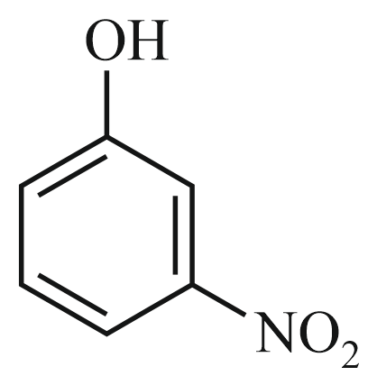
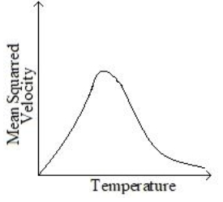

🧪 Environmental Chemistry
31
Total Questions
5
Years
1
Clusters
Question Clusters
CHEM-ENVICHEM-POLLUTION_SMOG_OZONE
Environmental Chemistry: Environmental Pollution: Smog, Acid Rain & Ozone Depletion
Year-wise Frequency
| Year | Questions | Frequency |
|---|---|---|
| 2021 | 8 | |
| 2022 | 3 | |
| 2023 | 15 | |
| 2024 | 0 | |
| 2025 | 5 |
Questions
Q39 (2021 Shift 1)
The type of pollution that gets increased during the daytime and in the presence of O3 is :
CHEM-2021-0101-S1-Q039
Q37 (2021 Shift 1)
The satements that are TRUE:
CHEM-2021-0101-S1-Q037
Q38 (2021 Shift 1)
The gas released during anaerobic degradation of vegetation may lead to:
CHEM-2021-0101-S1-Q038
Q39 (2021 Shift 2)
Given below are two statements: Statement I: The value of the parameter "Biochemical Oxygen Demand (BOD)" is important for survival of aquatic life. Statement II: The optimum value of BOD is 6. 5 ppm. In the light of the above statements, choose the most appropriate answer from the options given below:
CHEM-2021-0101-S2-Q039
Q41 (2021 Shift 1)
Given below are two statements: Statement I : An allotrope of oxygen is an important intermediate in the formation of reducing smog. Statement II : Gases such as oxides of nitrogen and sulphur present in troposphere contribute to the formation of photochemical smog. In the light of the above statements, choose the correct answer from the options given below:
CHEM-2021-0101-S1-Q041
Q39 (2021 Shift 2)
Given below are two statements : one is labelled as Assertion
CHEM-2021-0101-S2-Q039
Q40 (2021 Shift 1)
The presence of ozone in troposphere:
CHEM-2021-0101-S1-Q040
Q39 (2021 Shift 1)
Which one of the following statements is NOT correct?
CHEM-2021-0101-S1-Q039
Q39 (2022 Shift 1)
The eutrophication of water body results in
CHEM-2022-0101-S1-Q039
Q38 (2022 Shift 1)
Given below are two Statements : Statement I : Classical smog occurs in cool humid climate. It is a reducing mixture of smoke, fog and sulphur dioxide. Statement II : Photochemical smog has components, ozone, nitric oxide, acrolein, formaldehyde, PAN etc. In the light of the above statements, choose the most appropriate answer from the options given below.
CHEM-2022-0101-S1-Q038
Q40 (2022 Shift 2)
Sulphur dioxide is one of the components of polluted air. SO2 is also a major contributor to acid rain. The correct and complete reaction to represent acid rain caused by SO2 is :
CHEM-2022-0101-S2-Q040
Q36 (2023 Shift 1)
How can photochemical smog be controlled?
CHEM-2023-0101-S1-Q036
Q37 (2023 Shift 1)
The possibility of photochemical smog formation is more at
CHEM-2023-0101-S1-Q037
Q45 (2023 Shift 2)
Number of crystal systems from the following where body centred unit cell can be found, is _____. Cubic, tetragonal, orthorhombic, hexagonal, rhombohedral, monoclinic, triclinic

CHEM-2023-0101-S2-Q045
Q60 (2023 Shift 2)
Match List-I with List-II. List-I List-II Natural Amino One Letter acid Code (A) Arginine (I) D (B) Aspartic acid (II) N (C) Asparagine (III) A (D) Alanine (IV) R Choose the correct answer from the options given below: (1) (A)–IV, B–I, (C)–II, (D)–III (2) (A)–I, B–III, (C)–IV, (D)–II (3) (A)–III, B–I, (C)–II, (D)–IV (4) (A)–IV, B–I, (C)–III, (D)–II
Answer:
5CHEM-2023-0101-S2-Q060
Q49 (2023 Shift 2)
The statement/s which are true about antagonists from the following is/are: A. They bind to the receptor site. B. Get transferred inside the cell for their action. C. Inhibit the natural communication of the body. D. Mimic the natural messenger. Choose the correct answer from the options given below:
CHEM-2023-0101-S2-Q049
Q55 (2023 Shift 1)
The number of incorrect statement/s about the black body from the following is______ (A) Emit or absorb energy in the form of electromagnetic radiation. (B) Frequency distribution of the emitted radiation depends on temperature. (C) At a given temperature, intensity vs frequency curve passes through a maximum value. (D) The maximum of the intensity vs frequency curve is at a higher frequency at higher temperature compared to that at lower temperature.
Answer:
0CHEM-2023-0101-S1-Q055
Q42 (2023 Shift 2)
The correct relationships between unit cell edge length ‘a’ and radius of sphere ‘r’ for face-centred and body- centred cubic structures respectively are:
CHEM-2023-0101-S2-Q042
Q46 (2023 Shift 1)
Match List I with List II List I List II A Nitrogen oxides in air I Eutrophication B Methane in air II pH of rain water becomes 5. 6 C Carbon dioxide III Global warming D Phosphate fertilisers in water IV Acid rain Choose the correct answer from the options given below :
CHEM-2023-0101-S1-Q046
Q57 (2023 Shift 2)
Sodium metal crystallises in a body centred cubic lattice with unit cell edge length of 4 Å. The radius of sodium atom is ___ × 10-1Å. (Nearest integer)

Answer:
17CHEM-2023-0101-S2-Q057
Q40 (2023 Shift 1)
The possibility of photochemical smog formation will be minimum at
CHEM-2023-0101-S1-Q040
Q41 (2023 Shift 1)
Some reactions of NO2 relevant to photochemical smog formation are Identify A, B, X and Y
CHEM-2023-0101-S1-Q041
Q45 (2023 Shift 1)
Correct statement about smog is
CHEM-2023-0101-S1-Q045
Q42 (2023 Shift 2)
The concentration of dissolved Oxygen in water for growth of fish should be more than X ppm and ¯ Biochemical Oxygen Demand in clean water should be less than Y ppm . X and Y in ppm are, respectively. ¯
CHEM-2023-0101-S2-Q042
Q39 (2023 Shift 1)
Formation of photochemical smog involves the following reaction in which A, B and C are respectively. hu (i) NO2 ⟶A + B (ii) B + O2 →C (iii) A + C →NO2 + O2 Choose the correct answer from the options given below:
CHEM-2023-0101-S1-Q039
Q44 (2023 Shift 2)
The water quality of a pond was analysed and its BOD was found to be 4 . The pond has
CHEM-2023-0101-S2-Q044
Q41 (2025 Shift 1)
Two spherical bodies of same materials having radii 0.2 m and 0.8 m are placed in same atmosphere. The temperature of the smaller body is 800 K and temperature of the bigger body is 400 K . If the energy radiated from the smaller body is E, the energy radiated from the bigger body is (assume, effect of the surrounding temperature to be negligible),
CHEM-2025-0101-S1-Q041
Q37 (2025 Shift 2)
A body of mass 100 g is moving in circular path of radius 2 m on vertical plane as shown in figure. The velocity of the body at point A is 10 m/s . The ratio of its kinetic energies at point B and C is : (Take acceleration due to gravity as 10 m/s2 )

CHEM-2025-0101-S2-Q037
Q41 (2025 Shift 2)
The temperature of a body in air falls from 40∘C to 24∘C in 4 minutes. The temperature of the air is 16∘C . The temperature of the body in the next 4 minutes will be:
CHEM-2025-0101-S2-Q041
Q50 (2025 Shift 1)
The moment of inertia of a solid disc rotating along its diameter is 2.5 times higher than the moment of inertia of a ring rotating in similar way. The moment of inertia of a solid sphere which has same radius as the disc and rotating in similar way, is n times higher than the moment of inertia of the given ring. Here, $\mathrm{n}=_________ Consider all the bodies have equal masses.

CHEM-2025-0101-S1-Q050
Q45 (2025 Shift 1)
A body of mass ' m ' connected to a massless and unstretchable string goes in verticle circle of radius ' R 'under gravity g . The other end of the string is fixed at the center of circle. If velocity at top of circular path is n√gR , where, , then ratio of kinetic energy of the body at bottom to that at top of the circle is n ⩾1
CHEM-2025-0101-S1-Q045